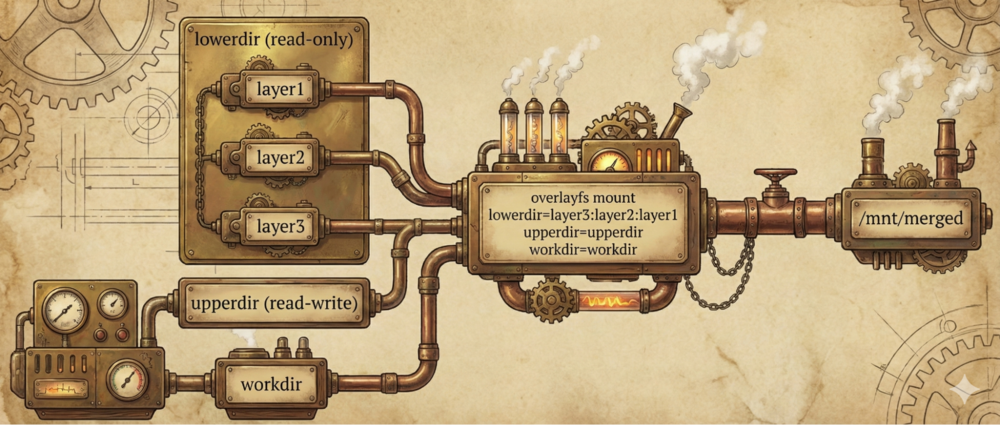

Running containers is fun, until you have to wait for 5 hours to download all the image layers from a rate-limited server through your brittle mobile connection. Let's dive a little deeper into what is actually stored in those layers and how to make them thinner.
OCI Image
In Open Container Initiative lingo, an image is a self-contained package of data needed to run a container and a container is a live instance of an image. Like many public specifications, the images spec got somewhat bloated over time.
For the sake of this post, it's enough to distinguish the following parts:
- Index: a list of manifests
- Manifest: metadata describing a specific container for a specific OS and architecture target, e.g., "ubuntu:22.04 for arm64/linux"
- Layers: data that's combined to create a container's file system
What's in a layer? The full specification is…surprise, surprise… a tad bloated. Let's keep it simple and treat each layer as a tarred and compressed directory. When a container starts, those layers are unpacked and mounted as overlayfs. Overlayfs is a union file system that combines the individual layers into a single view.
The beauty of this system is that image creation is composable. You can start with an existing image and add a few layers on top. That's more or less how Dockerfile works, translating lines into separate layers.
FROM python:3.13 COPY requirements.txt ./ RUN pip install --no-cache-dir -r requirements.txt COPY src ./src
You can browse indexes and manifests of images by querying OCI registries – e.g., with tools like skopeo:
skopeo inspect --raw docker://docker.io/ubuntu@sha256:d22e4fb389065efa4a61bb36416768698ef6d955fe8a7e0cdb3cd6de80fa7eec | jq
{
"schemaVersion": 2,
"mediaType": "application/vnd.oci.image.manifest.v1+json",
"config": {
"mediaType": "application/vnd.oci.image.config.v1+json",
"size": 2297,
"digest": "sha256:97bed23a34971024aa8d254abbe67b7168772340d1f494034773bc464e8dd5b6"
},
"layers": [
{
"mediaType": "application/vnd.oci.image.layer.v1.tar+gzip",
"size": 29723147,
"digest": "sha256:4b3ffd8ccb5201a0fc03585952effb4ed2d1ea5e704d2e7330212fb8b16c86a3"
}
]
}
Everything in OCI is content-addressable, which roughly means you can access it by its hash. That applies to layers too, which makes them reusable. Layers from the python:3.13 image need to be fetched only once, even if multiple images are based on them.
The problem
The beautiful idea of composable layers hits a very practical problem: layers tend to get much larger than expected. This is mostly caused by the format in which layers are stored. Even if a single bit in a file is changed, a full-fledged copy of the new contents gets saved in a new layer. What exacerbates the problem is that metadata changes, like a mere bump of the "last modified" timestamp, also induce a full copy. The final result? You may end up with hundreds of megabytes of target/debug/ from your Rust build artifacts being duplicated across dozens of layers, even though their content is identical and only their mtime differs.
Solutions
The problem isn't new, so the ecosystem already provides quite a few ways of thinning images.
rebuild with fewer layers
Rebuilding the image is not always feasible. If it is, there are a few Dockerfile recommendations to keep the number of layers small:
- Avoid copying redundant files with the COPY directive (duh). This is especially important if a wildcard happens to include the
node_modules/subdirectory. - Chain multiple commands with endless &&-chains. This is why you sometimes see entries like
RUN apt-get -y --force-yes --really-force-yes update && apt-get install -y --yes-please curl && curl --proto '=https' --tlsv1.2 -sSf https://sh.rustup.rs | sh || echo "just kill me now this command is already 4 lines long"
in Dockerfile definitions.
docker-squash
Files can't be duplicated across multiple layers if you don't have multiple layers! This simple idea underlies docker-squash, a tool for folding multiple consecutive layers into one. A mild limitation is that you can only effectively squash the last N layers, not any N arbitrary middle layers. Still, it's a viable solution that does not require rebuilding.
composefs
Composefs is a new hipster overlayfs-on-steroids. It strives to solve the problem of duplicating files if only their metadata changed. In composefs, data and metadata are (rightfully) split into separate entities. That way, when a file's mtime changes, you can just duplicate its metadata, not the entire file contents. The idea is really nice, but the adoption is less so. At the time of writing, it's unfortunately not very easy to build (or rebuild) images in this format.
That other problem
These existing solutions require either rebuilding the images or giving up on granularity by squashing layers. What if we insist on keeping the structure intact? In that case, there's an interesting approach to consider!
That interesting approach to consider
Layers are just tarred and compressed directories. You can unpack them, process them one by one, and creatively deduplicate identical files.
So, the creative approach is as follows. For each file in a given layer:
- Look for a file with a matching path in the previous layers.
- If found, compare if their sizes are the same (optional optimization).
- If sizes match, compare their contents.
- If contents match, remove the file from the current layer.
We're obviously giving up on metadata updates, but the core observation is that often nobody cares about mtime.
Once all files in a given layer are processed, that layer is repacked, recompressed, and renamed to its new hash value (so that it remains content-addressable).
After all layers are processed, a new manifest and index need to be prepared, but these are just JSON files. If you reached this point of this blog post, you're obviously an avid fan of jq, so cooking a modified manifest should fall right into your list of fun things to do this evening.
As a side effect, squashing arbitrary ranges of layers is extremely easy with this approach – just apply a few layers on top of one another, and only then tar and compress.
A very crude version of this approach is hacked here. There are absolutely zero guarantees on correctness, so use it at your own risk.
Why would you ever need such a thing? Sometimes the layers represent the exact build history of the image – think building an image per each git revision in a large repository. That really helps if, say, you need to power a large model factory.
Bonus: whiteout files and opaque directories
One important aspect of overlayfs is that sometimes files need to be deleted across layers. That's usually implemented with whiteout files and opaque directories.
An OCI layer whiteout file is most commonly named with an extra .wh. prefix. A file named .wh.passwd is interpreted as "please treat the passwd file as removed." Interestingly, regular overlayfs uses an alternative format – a file with the same name as the target, but set to be a "character device with major/minor numbers set to 0,0."
I suspect the .wh format is simply more cross-platform or, more specifically, less UNIX-y.
An opaque directory is marked to mean "keep this directory, but disregard any files that previously belonged to it, it is now declared empty." This directory will customarily be marked by a special marker file with a quite adorable name: .wh..wh..opq.
The final effect is as follows:
# Layer 1
├── /etc/
│ └── config.conf
└── /var/data/
├── file1
└── file2
# Layer 2
├── /etc/
│ └── .wh.config.conf # deletes /etc/config.conf from lower layer
└── /var/data/
├── .wh..wh..opq # hides all files from /var/data
└── file3 # adds a new file
# What you actually see
├── /etc/ # config.conf hidden due to whiteout
│ └── (empty)
└── /var/data/ # lower file1, file2 hidden by opaque dir
└── file3